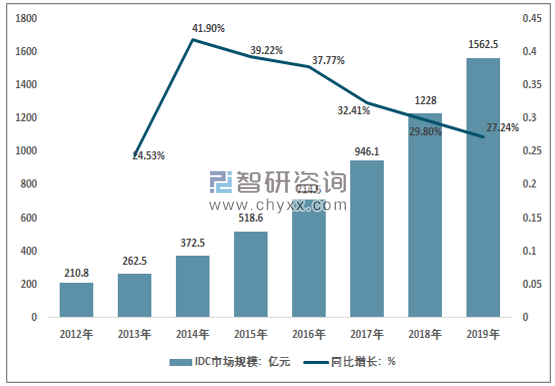

现在位置：网站首页-专业动态-行业动态
行业动态
-
 计算机行业今日净流出资金27.70亿元8股净流出资金超亿元发表时间：2020-06-17
计算机行业今日净流出资金27.70亿元8股净流出资金超亿元发表时间：2020-06-17沪指6月17日上涨0.14%，申万所属的28个一级行业中，今日上涨的有14个，涨幅居前的行业为医药生物、钢铁，涨幅为2.38%、2.36%。计算机行业今日上涨0.36%。跌幅居前的行业为休闲服务、电气设备，跌幅为1.70%、0.75%。
资金面上看，两市主力资金全天净流出265.82亿元，今日有4个行业主力资金净流入，医药生物行业主力资金净流入规模居首，该行业今日上涨2.38%，全天净流入资金11.85亿元，其次是农林牧渔行业，日涨幅为1.10%，净流入资金为10.93亿元。
主力资金净流出的行业有24个，电子行业主力资金净流出规模居首，全天净流出资金64.21亿元，其次是计算机行业，净流出资金为27.70亿元，净流出资金较多的还有非银金融、电气设备、房地产等行业。
计算机行业今日上涨0.36%，全天主力资金净流出27.70亿元，该行业所属的个股共236只，今日上涨的有116只，涨停的有3只；下跌的有117只。以资金流向数据进行统计，该行业资金净流入的个股有83只，其中，净流入资金超5000万元的有6只，净流入资金居首的是科蓝软件，今日净流入资金1.77亿元，紧随其后的是用友网络、广联达，净流入资金分别为1.20亿元、1.19亿元。计算机行业资金净流出个股中，资金净流出超亿元的有8只，净流出资金居前的有中科曙光、中国软件、浪潮信息，净流出资金分别为3.97亿元、2.94亿元、2.33亿元。(数据宝)
-
这个推动了网络安全行业有序健康发展的大会已经举办了八届发表时间：2020-06-17
网络安全与民众的日常生活密不可分，从移动支付到网络直播，无不与网络安全相关。那人们对于网络安全的重视程度到底如何呢？
“要是在五年前，我会说肯定没有足够重视。但今天，我觉得大部分普通公众和老百姓已经初步具备了使用移动产品、移动服务或者移动应用安全风险的防范，他们也知道去防范一些骗局、诈骗等等，可以说网络安全已经引起民众的重视。不过，网络安全最大的特点是攻击者和防守者的对抗，这个博弈是不停的，因为在博弈中才能推动网络安全技术的发展。所以只有更重视，才可以持续保障我们在信息社会中的权益。”来自复旦大学计算机科学技术学院的杨珉教授在接受小时新闻记者采访时说。
6月16日，以“数治安全 智理未来”为主题的2020西湖论剑·网络安全线上峰会在杭州召开。本次峰会设立1个主论坛、6个分论坛、网络安全云上展览等特色环节，采取杭州主会场、北京分会场两地同步线上直播的形式，通过新华网、央视频移动网APP、凤凰网、浙江在线天目新闻客户端、钉钉等平台向网友带去会议实况。峰会开展近70场专题报告，共话网络安全最新议题，共推数字世界新时代。
杭州安恒信息技术股份有限公司董事长范渊等国内网络安全专家学者分享了涵盖新基建、5G、区块链、工业互联网数据安全、金融科技安全、网络安全生态建设、网络信息安全服务等热点话题的见解。
-
网络工程专业的就业前景如何发表时间：2020-06-17
首先，网络工程专业的整体就业情况还是不错的，作为传统的计算机专业之一，网络工程专业为整个IT行业培养了大量的专业人才。
由于网络工程专业的基础知识结构比较丰富，所以该专业的就业面也比较广阔，既可以从事网络通信方面的研发设计岗位，也可以从事软件开发方面的工作岗位，随着大数据、云计算和物联网的发展，网络工程专业的就业面也在一定程度上得到了拓展。
网络工程专业的知识结构包括三大部分，其一是计算机基础知识，包括操作系统、编程语言、数据库、编译原理等内容；其二是网络基础知识，包括数据通信、通信协议、交换原理、网络安全、网络操作系统、网络编程等内容；其三是具体研究方向的专业知识，涉及到物联网、云计算等技术。
网络工程专业还有一个比较重要的特点，就是课程难度相对较大，整个课程体系涉及到大量的数学知识和物理知识，所以选择网络工程专业的学生通常需要具有较强的学习能力。不少对于网络工程专业不够了解的人往往会认为该专业并不难，其实这是一个较大的误区。早期不少IT行业的从业人员在读研方向的选择上更愿意选择计算机网络，感觉这个方向会更容易一些，结果这个选择导致很多人延期毕业，因为难度确实比较大。
最后，在当前的就业环境下，对于网络工程专业的学生来说，如果条件允许的情况下，最好读一下研究生，一方面读研会明显提升自身的岗位竞争力，另一方面网络工程专业读研也有更多的选择，可以选择物联网、人工智能等方向。
-
2019年中国互联网数据中心持证企业数共2153家，数据中心市场规模达到1502.2亿元发表时间：2020-06-09
IDC，即互联网数据中心，是指拥有高速互联网宽带接入、高性能局域网络、安全可靠地机房环境等完善设备、专业化的管理、完善的应用级服务的服务平台。
智研咨询发布的《2020-2026年中国互联网数据中心（IDC）行业分析及发展策略咨询报告》显示，2019年我国数据中心市场规模达到1562.5亿元，同比2018年增长 27.24%，近年来行业持续保持快速增长势头。
2019年我国数据中心行业市场规模约1562.5亿元，其中，IDC云服务374.7亿元，IDC传统业务1187.8亿元。
我国 IDC 市场相比欧美国家起步较晚，但受益于“互联网+”、大数据战略、数字经济等国家政策指引以及移动互联网的快速发展，我国 IDC 行业市场规模连续高速增长，已经发展成为全球互联网数据中心的重要建设基地。
移动互联网、互联网+、云计算、大数据、物联网、人工智能等领域的蓬勃发展，电子商务、视频、游戏等行业客户需求稳定增长，我国数据规模呈现爆炸式增长。作为海量数据的载体，互联网数据中心建设成为大势所趋，未来几年我国数据中心市场仍将处于快速发展期。
根据工信部统计数据2019年12月底我国取得互联网数据中心业务许可的业务数达到2153家，同期我国数据中心市场规模达到1502.2亿元，在庞大的市场体量面前，我国数据中心市场格局显得较为分散。
近年来，随着互联网业务的高速发展，IDC市场正进入快速增长期。据统计，2005~2012年，中国IDC市场规模增长了6倍，年均增长率超过30%。2012年中国IDC基础业务规模达到137.2亿元，同比增长20%，2014年产业规模增长至235.6亿元，较2013年同期增长39.6%，到2019年产业规模增长到892.1亿元，近年来产业规模延续高速增长态势。
据统计，中国IDC市场增值业务市场规模从2012年的73.5亿元增长至2019年670.4亿元。
近年来云计算在各行业的应用逐渐落地，例如：云计算解决了大型互联网企业对低能耗、可扩展性和支撑业务峰值的需求；政务云可以帮助政府行业打破部门间的数据堡垒，实现部门间的信息共享和业务协同，提升公众服务能力；电信云有利于运营商整合内部分散的信息系统，减少运营成本；金融云对中小银行成本节约和业务拓展方面的支撑等等。未来随着云计算安全体系的逐步完善，云计算在各行业细分领域的应用能力将进一步得到提升。其中以互联网、政府、电信、教育、医疗、金融、能源和电力等行业为重点，云计算在中国市场将逐步被越来越多的企业和机构采用。
摘自(http://www.chyxx.com/industry/202006/872111.html)
-
2019年中国618大促活动用户规模、揽件量及2020年成交额预测发表时间：2020-06-04
智研咨询发布的《2020-2026年中国电商平台行业市场消费调查及战略咨询研究报告》数据显示：618大促活动已经成为覆盖5亿用户，成交额超5,000亿的行业年中大促。2019年618当天移动购物行业日活跃用户规模达5.2亿，同比增长18.4%，6月1日至6月18日平均日活跃用户达4.63亿，同比增长25.1%。2019年618期间，快递揽件量达31.9亿，同比增长26.6%，由于持续时间长于双11（18天vs.11天），大促期间合计揽件量高于双11期间。
疫情无阻活跃用户增长，预计618期间能够有超6亿用户参与。国内主要电商平台如淘宝、拼多多、京东3月DAU已经基本恢复至12月的水平，且皆有不同程度的提升。从历年618和双11当天整体行业DAU来看，每年618和上年双11的最高DAU之间基本相近，预计在用户持续增长下预计2020年618最高DAU也和2019年双11当天6.58亿DAU接近。
预计在用户规模增长的驱动下，2020年618大促成交额预计超过6800亿，行业增速超25%。疫情影响使得供给端的库存压力较大，折扣力度与活动力度都有望达到较高水平，使得用户的参与度与购买度都有长足的提升，使得行业快递量预计能有30%以上的增长，并推动行业成交额增速回升至25%左右。
结构上，预计618期间耐用品占比有望实现环比提升。2020年前3个月，耐用品需求受到较大影响，但随着复工复产，服装、化妆品和家电等需求持续恢复。考虑到上述品类是电商平台较为重要的组成部分，预计618大促期间会有占比上的提升。
疫情下消费者对于线下购物的意愿下降，带来线上消费意愿的大幅提升。在药品、生鲜等必须消费品的线上化趋势带动下，疫情使得全国网上零售额渗透率加速提升，2020年前2个月渗透率同比提升5.0pct，3月同比提升6.0pct，皆为2016年起至今最高增长水平。
从国内零售额增速来看，6月和11月（电商大促月份）化妆品、汽车和日用品皆有不错表现，月度增速表现在全年中也相对靠前。此次618在特殊时间点下，用户需求也有望迎来更加明显的反弹。
除了各大电商平台加大广告营销和促销力度外，其他互联网流量平台，短视频电商抖音、快手以及微信均宣布加入618大战。
-
计算机行业动态分析：“宅经济”引爆云经济发表时间：2020-02-09
市场回顾：上周沪深300 指数下跌2.60%，中小板指数下跌1.28%，创业板指数上涨2.09%，计算机（中信）板块上涨4.10%。板块个股涨幅前五名分别为：致远互联，优刻得，金山办公，真视通，宝信软件；跌幅前五名分别为：实达集团，*ST 工新，恒泰艾普，唐源电气，维信诺。
行业要闻：
工信部：2019 年软件业务收入71768 亿元，同比增长15.4%
华为云通过新加坡银行业协会权威认证
全国28 省市合作阿里上线“数字防疫系统”
工信部：充分发挥人工智能赋能效用、协力抗击疫情
公司动态：
顺网科技：公司捐赠人民币1000 万元现金，成立“抗击新型冠状病毒肺炎疾病专项基金”
朗新科技：公司向湖北省内部分市县捐赠医疗物资和现金
三六零：公司共捐助资金及物资逾1,500 万元
合众思壮：公司控股公司郑州航空港智慧互联科技有限公司拟与郑州航空港兴港智慧城市有限公司签署《项目框架协议》
投资建议：上周周报中，我们分析了疫情对计算机板块的影响，重点推荐了远程办公、视频会议、在线教育、在线医疗四大行业，上周四大行业全线爆发。更重要的是，四大行业在政策扶持和用户数据方面都出现了非常惊人的变化，“宅经济”正在全面激活云经济。本周周报中，我们再次系统梳理了此次疫情对云经济的影响和具体受益领域：
基础设施：浪潮信息、宝信软件、中科曙光、数据港等。
远程办公：金山办公、深信服、启明星辰、南洋股份、用友网络、金蝶国际、泛微网络、致远互联、格尔软件、数字认证等；
视频会议：二六三、会畅通讯、梦网集团、苏州科达、齐心集团等；
在线教育：科大讯飞、佳发教育、鸿合科技、万达信息、新开普等；
在线医疗：阿里健康、平安好医生、创业慧康、久远银海、卫宁健康、东华软件、思创医惠、东软集团、麦迪科技、和仁科技等。
风险提示：行业发展不及预期、市场竞争加剧。
(摘自http://stock.finance.sina.com.cn/stock/go.php/vReport_Show/kind/search/rptid/634580064124/index.phtml)
-
互联网行业2020年中期策略：前浪与后浪 商业模式的交替发表时间：2020-06-17
2020 年这场席卷世界的疫情为国内及海外互联网行业带来冲击的同时也带来了机遇。2019 年互联网行业时长和用户红利全面见顶，内部竞争日趋激烈严重，而疫情的到来则将这种竞争转变为了行业内的巨大分化。一方面，疫情的影响使得线上经济与线下经济的结构性转变日趋紧迫；另一方面，线上内容消费的高涨与线下经济的低迷造成了流量的供需失衡。但是随着疫情缓解以及经济的恢复，互联网行业展现出了强劲的韧性与爆发力。由于疫情延长了线上内容的消费时间，加速了整体经济线下向线上的转移。线上娱乐、电商、本地生活平台等互联网巨头在后疫情时代展现出了巨大的爆发力。
后疫情时期，互联网线上内容、广告、电商迎来大变迁。
1、过剩的流量寻求加速变现，头部互联网公司寻求内容与形式的双向升级。其中字节、快手、哔哩等通过短视频平台获得流量的爆发，线上广告品牌向效果转化加剧。同时直播电商等其他转化率更高的变现方式加速。
2、出海流量日益成熟，以tiktok为主力的短视频上半年创造出海流量奇迹，变现初起步。手游出海高歌猛进，利润持续释放，成为手游增速拉动的主要驱动力，腾讯、网易出海收入同比增长迅猛，完美世界、心动等公司今年出海表现亮眼。
3.优质内容筹码抢夺加剧，头部互联网公司纷纷加强了对平台优质内容的投入，以优质内容为筹码获取市场份额。阅读与听书成为平台巨头抢夺最后的筹码。
电商行业进入爆发期，行业渗透率加速，行业格局大变革。
1、疫情加速了电商行业整体的渗透率，使整体渗透率提升。预计未来2 年实物电商GMV 交易额保持20%复合增速，社零线上化率提升至30%。
2、下沉市场将持续点亮电商高光增长，但是争夺从2C 转向2B。
3、2020 年电商行业GMV 驱动速度减弱，追求更高效转化是大趋势。未来电商平台将追求更高效、经营利润率更高的货币化率手段。
4、行业格局从集中走向分散，直播短视频等带货增长迅猛。
5、本地生活形成美团优势格局，本地商超零售线上化成为新的增长点。
坚持看好线上娱乐及电商两条主线。移动互联网线上内容领域，我们推荐移动互联网内容及社交王者，绝对龙头腾讯控股，同时看好拥有独特的年轻用户属性、深耕内容，构成了优质社区氛围，具备变现潜力的哔哩哔哩。手游出海领域看好绝对头部腾讯控股，和具备研发和独特社交平台的心动公司。长视频领域，推荐行业领先的爱奇艺，上下游议价能力转移，长视频成本侧竞争格局持续向好。电商领域，我们认为阿里巴巴作为绝对龙头生态具备极高的竞争壁垒，拼多多具备极强增长潜力，依靠挖掘微信活跃用户，活跃买家有潜力突破10 亿，突破阿里淘系天花板，将电商平台用户带上新台阶。京东物流料将发挥经营杠杆，净利润持续释放。美团点评作为本地生活绝对龙头。疫情之下竞争优势进一步巩固。建议关注中心化电商向私域流量转化过程中的第三方服务商。
风险提示：疫情反复风险，宏观经济承压，电商行业竞争加剧、互联网增速下滑、用户增长不及预期等
摘自(http://stock.finance.sina.com.cn/stock/go.php/vReport_Show/kind/lastest/rptid/645742926146/index.phtml)
-
网宿科技(300017)：5G网络应用MEC化 拓展CDN新增长空间发表时间：2020-06-17
5G 流量爆发为CDN 行业再添新活力，首次覆盖给予“增持”评级网宿科技专注于CDN 行业多年，主营业务包括CDN、IDC 相关产品及服务，同时公司也积极布局云计算、云安全、边缘计算等新兴领域，协同扩大业务范围。
公司CDN 业务市占率高，客户遍布各个行业，并持续加码研发投入，技术优势明显。5G 全面铺开，数据流量爆发待即，叠加新冠疫情产生的上云需求，随着“价格战”的企稳，CDN 行业有望迎来新一轮复苏并快速发展趋势，公司作为CDN 龙头企业将优先受益， 业绩有望保持快速增长。我们预测公司2020/2021/2022 年可实现归母净利润为4.10/5.28/6.81 亿元， 同增1088.5%/28.8%/29.1%，EPS 为0.17/0.22/0.28 元，对应PE 分别为51.4/39.9/30.9倍，相对可比公司，存在一定估值优势，首次覆盖，给予“增持”评级。
5G 应用繁荣拓宽新一轮CDN 需求，龙头企业有望优先受益随着5G 建设的全面铺开，5G 多样化应用将逐渐普及，CDN 作为流量经营的主要平台，将迎来进一步变革与发展。5G 首先爆发的是高流量业务，随后是低时延、大连接业务，车联网、物联网、VR/AR、云游戏等将逐步进入生活并快速普及，新的应用需求、新的应用模式、新的应用架构将进一步推动CDN 市场发展，带来行业的整体复苏。公司作为CDN 龙头企业，能够凭借其技术优势和客户黏性，有望在行业复苏过程中扩大市场份额，经营业绩有望保持快速增长。
公司着力产品广覆盖+服务深应用，全球化布局业绩有望边际改善公司重研发，在高清视频加速、动态加速技术、TCP 加速技术、大数据传输加速、移动互联网加速技术、流媒体直播加速、互联网安全技术等领域均取得了较大突破，作为第三方CDN 企业技术优势明显。公司依靠技术优势以及高性价比产品积极进行海外扩张，目前已在全球部署超过3 万台服务器，在欧洲、非洲以及亚太地区部署超过60 个海外加速节点，随着国外疫情的逐步控制以及数通业务的企稳发展，公司海外业务有望取得再突破，带来经营业绩边际改善。
-
 骁龙690发布，高通补上5G短板发表时间：2020-06-17
骁龙690发布，高通补上5G短板发表时间：2020-06-176月17日，高通开了场小型发布会，正式推出了新款芯片——骁龙690。从命名方式来看，这是一款面向中低端市场的手机处理器，但在具体的参数和细节上，也存在着一些“越级”的特性。
更重要的是，这款芯片的发布，意味着高通在5G手机普及潮中，放出了新的大招，投身于5G百元机的争夺战中。
骁龙690发布，高通补上5G短板,主要亮点：A77大核加持，首款6系5G芯片
骁龙690的升级点，基本可以分为两个维度：传统性能上的提升和对5G网络的支持。
核心参数方面，骁龙690的CPU部分依然延续了8核心设计，两颗大核为A77架构，主频2.0GHz；6颗小核则依然是A55架构，主频1.7GHz。GPU方面，骁龙690配备了Adreno 619L。按照官方说法，骁龙690 CPU性能提升了20%，GPU性能提升了60%。当然，这个数据是和骁龙675对比后得出的。
骁龙690的CPU性能提升，主要来源于大核从A76架构升级到了A77架构。不过，这款处理器依然只有两颗大核，很大程度上限制了性能的进一步提升。从目前的信息来看，骁龙690的CPU部分，大核领先于骁龙765G，但GPU方面则还是落后于765G。
根据安兔兔官方数据库，骁龙675 GPU性能跑分约为3.45万，提升60%的话，大概为5.5万，超过了骁龙710，但比骁龙730落后，和骁龙765相比更是有巨大差距。而且，制程方面，骁龙690没有用上最新的7nm工艺，采用的还是三星的8nm LPP。
由此我们可以看到，高通在骁龙690上的刀法依然十分精准，CPU和GPU上的性能提升控制得十分小心。作为面向中低端市场的芯片，骁龙690无法威胁到自家的中高端芯片，更不用说旗舰芯片了。当然，它的整体性能，满足一般用户的轻度日常使用需求，问题不大。
采用高通芯片的5G手机，给人的感觉还是主打中高端市场，不管是去年的骁龙855+X50还是今年的骁龙865+X55组合，价格都不便宜。即使是面向中端市场的骁龙765G芯片，手机售价基本都在2000元以上。
而骁龙690是首款支持5G的高通6系芯片，就是冲着百元机和千元机去的。骁龙690配备了X51集成式基带，支持5G Sub 6频段，最高理论下行速率2.5Gbps、上行速率660Mbps，满足日常网络需求问题不大。当然，它不支持毫米波，对美国用户可能会有影响，但对国内用户基本没影响。
受限于定位，骁龙690是不支持WiFi 6的，不过官方表示它支持WiFi 6的部分特性。综合来看，骁龙690网络方面的升级是它作为一款中低端芯片的主要卖点，承担着高通在百元5G手机市场的普及任务。